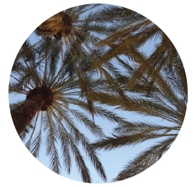
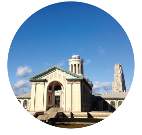
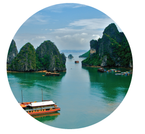
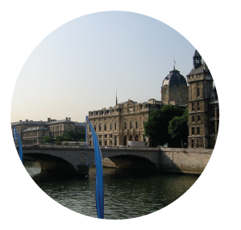
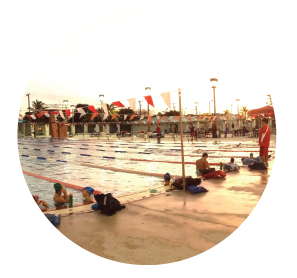
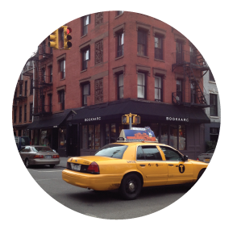
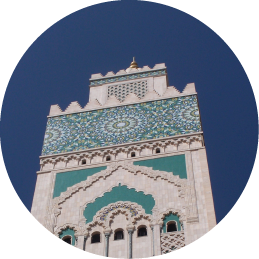

SAN FRANCISCO, CALIFORNIA
SAN FRANCISCO, CALIFORNIA
This is where I am currently. I love that San Francisco has so many diverse neighborhoods packed into a 5 mile radius. I also really admire the startup culture that Silicon Valley has to offer. San Francisco is a place where I can definitely see myself after school!
IRVINE, CALIFORNIA

This is where I grew up and it's a place I call home. What I love about Irvine is that it's always so comfortable there. I mean the weather isn't so bad either. The memories I have made in this city are one of the many reasons why I always want to go back home.
PITTSBURGH, PENNSYLVANIA

This is where I go to school. Three years have gone by (very quickly I might add) and I have met so many people I can call my friends. In addition, this is the place where I have learned the most about who I am as a person and who I want to be. Here I was able to open my eyes to the world of technology, a field I hope to be in after school. I have one more year in Pittsburgh and I hope to continue to grow and meet more people along the way.
SAIGON, VIETNAM

This is where I want to go in the future because, well, being Vietnamese it's a place where I will be able to learn about the culture my grandparents and parents grew up in. Of course, the food is something I would love to try too (because Vietnamese food is the best).
PARIS, FRANCE

This is where the majority of my family lives. The last time I visited France was maybe when I was 10? I don't remember exactly but it's definitely one of those places where you're always like "man I really wish I was fluent in french". I'm also the only one in my family who probably doesn't speak french. Embarrasing for someone whose name is french.
RIO DE JANIERO, BRAZIL
This is where I want to go.
MIAMI, FLORIDA

Every year, the Carnegie Mellon swim team travels here for the yearly training trip. We arrive around the first or second of January and stay there for 10 days. Everyday we have two practices, one in the morning and one in the afternoon with each practice lasting about two and half to three hours. Although we swim for a large part of the day, it's always been a real bonding experience for the team. In between practices we get to go to the beach (and go in the water...again) and relax before heading back to the pool. This place holds near and dear to me because individually I was able to push myself everyday in the sport that I love.
NEW YORK CITY, NEW YORK

New York is a place unlike any other. I love the fact that it has many neighborhoods (similar to SF) but it has a quickness in its culture that is unprecedented. My favorite neighborhood in New York? West Village.
MARRAKECH, MOROCCO

New York is a place unlike any other. I love the fact that it has many neighborhoods (similar to SF) but it has a quickness in its culture that is unprecedented. My favorite neighborhood in New York? West Village.
SANTORINI, GREECE

This is a place I want to go to.